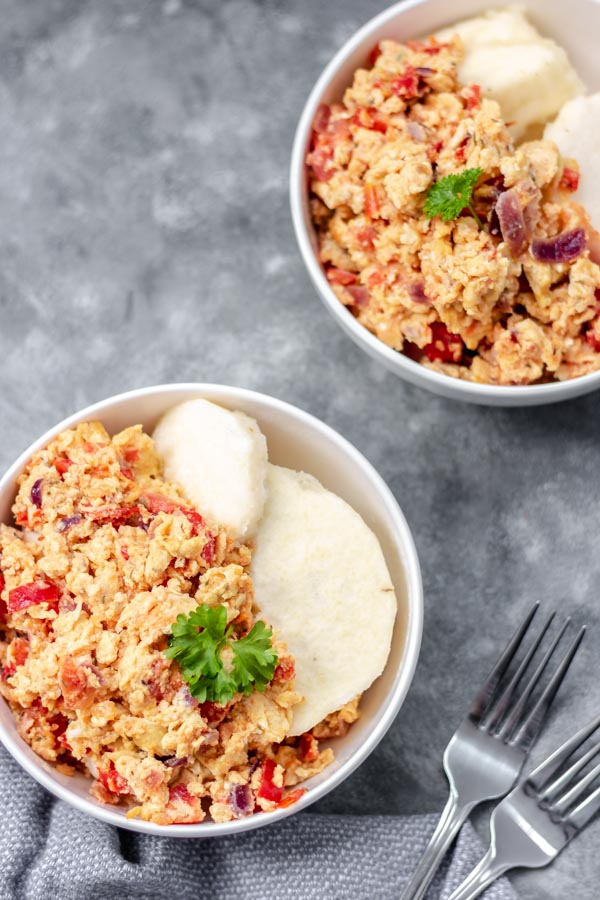

Yam and Egg Sauce Recipe
Yam and Egg Sauce is a Nigerian dish that is both delicious and nutritious. It combines the starchy goodness of yam with the protein-rich benefits of eggs, making it a perfect meal for any time of the day.

Recipe Info
-
Preparation: ~ 15 minutes (peeling yam, chopping
onions, tomatoes and pepper)
-
Cooking: ~ 20 minutes (boiling yam + making egg
sauce)
- Total: ~ 35 minutes
- Servings: 4
Ingredients

For the yam:
- 1 medium tuber of yam
- Water (enough to cover yam in the pot)
- Salt
For the egg sauce:
- 3 medium tomatoes, chopped
- 1 red bell pepper, chopped
- 1-2 scotch bonnet peppers (atarodo), chopped
- 1 medium onion, chopped
- 4 eggs
- 3 tablespoons of vegetable oil
- 1 seasoning cube
- Salt
Instructions
Step 1 - Boil the yam
- Slice yam into about 1-inch size and peel the skin off.
-
Rinse in clean water till water runs clear and no residue in water
-
Put yam in a pot, add enough water to cover it add salt and place on medium heat and cook till soft. Test with a fork, if it goes through, then the yam should be soft enough.
- Drain water from yam if you want.
Step 2 - Making the egg sauce
- Place the frying pan on a medium/low heat, add vegetable oil and heat for about 2-3 minutes.
- Add chopped onions and fry until translucent.
- Add chopped tomatoes and peppers. Fry on medium heat until the water from the tomatoes evaporates and the sauce thickens.
- Add seasoning cube and salt and stir well.
- Break the eggs into a bowl and whisk till egg yolk and egg white are well combined, add little salt and pour the whisked eggs into the sauce
- Let the eggs set for about 20-30 seconds before gently stirring to scramble into the sauce (you can leave them chunkier or finer depending on preference).
- Cook until eggs are done and well combined with sauce.
- Serve the hot egg sauce over boiled yam slices
Additional Information
- Avoid overcooking the yam to keep it soft and fluffy rather than dry and crumbly.
- If you like it spicy, increase the amount of scotch bonnet pepper, but taste as you go.
- For richer taste, add a pinch of curry powder or thyme to the egg sauce while cooking.
Original recipe and image adapted from MyActive Kitchen. Adjustments were made for extra flavour and clarity
Nutrition Facts
Per serving (based on 4 servings):
| Nutrient |
Amount |
| Calories |
~350 kcal |
| Carbohydrates |
45 g |
| Protein |
12 g |
| Fat |
15 g |
| Fiber |
4 g |
| Sodium |
300 mg |